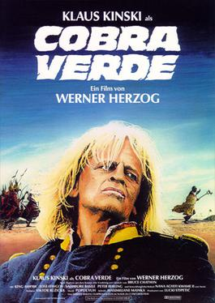

Cobra Verde

Werner Herzog
1987
111 minutes
Wikipedia link
IMDB link
TV Tropes link
This is text.
Time to choose something different:
- I wonder what Klaus Kinski was like as a baby... - Turn to section 47
- I want an army of Amazons to stage theater productions with, but I'd settle for an army of asylum inmates instead. - Turn to section 45
- An army of Amazons would be great, but an army of sassy flying monkeys would be even better! - Turn to section 123